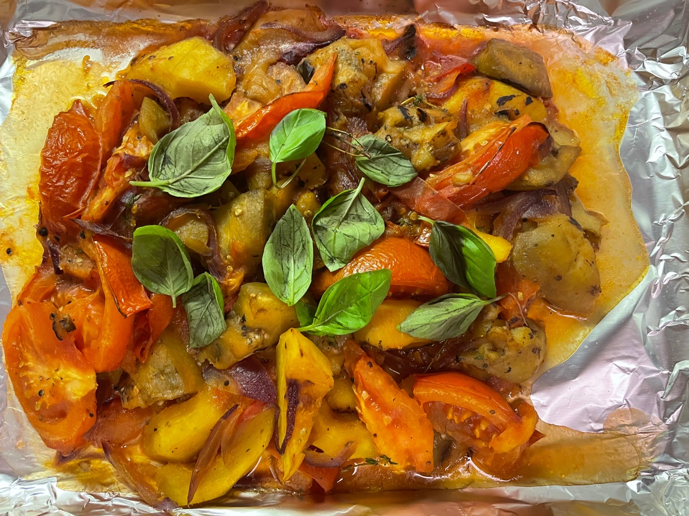

原料：洋葱，2个西葫芦，1个茄子，4、5个西红柿
1. 所有蔬菜切块
2. 热锅冷油，去皮洋葱煎成褐色
3. 加入西葫芦和茄子，翻炒5-10分钟
4. 最后加入小块的西红柿
5. 加入盐，胡椒，百里香，月桂叶调味
6. 盖上盖子小火煮30分钟
7. 出锅
1. Alors il te faut 1 oignon, 2 courgettes 1 aubergine et 4 ou5 tomates. Tout dépend de la grosseur des légumes.
2. S'ils sont petits, n'hésite pas à rajouter 1 courgette et 1 tomate.
3. Tu fais revenir l'oignon épluché et coupé en petits morceaux dans une casserole avec de l'huile d'olive, tu rajoutes les courgettes coupées en morceaux, puis l'aubergine.
4. Tu remues bien pendant 5 a 10 minutes et tu rajoutes enfin les tomates coupées en petits morceaux.
5. Sel poivre, thym laurier et tu laisses mijoter avec un couvercle à feu doux 30 minutes.
6. Tu surveillés que cela n'accroche pas et tu rajoutes un peu d'eau s'il le faut.
7. Tu goûtes pour vérifier l'assaisonnement
8. Et c'est prêt ! Tu dois en avoir pour 2 repas avec cette quantité. 😉😋